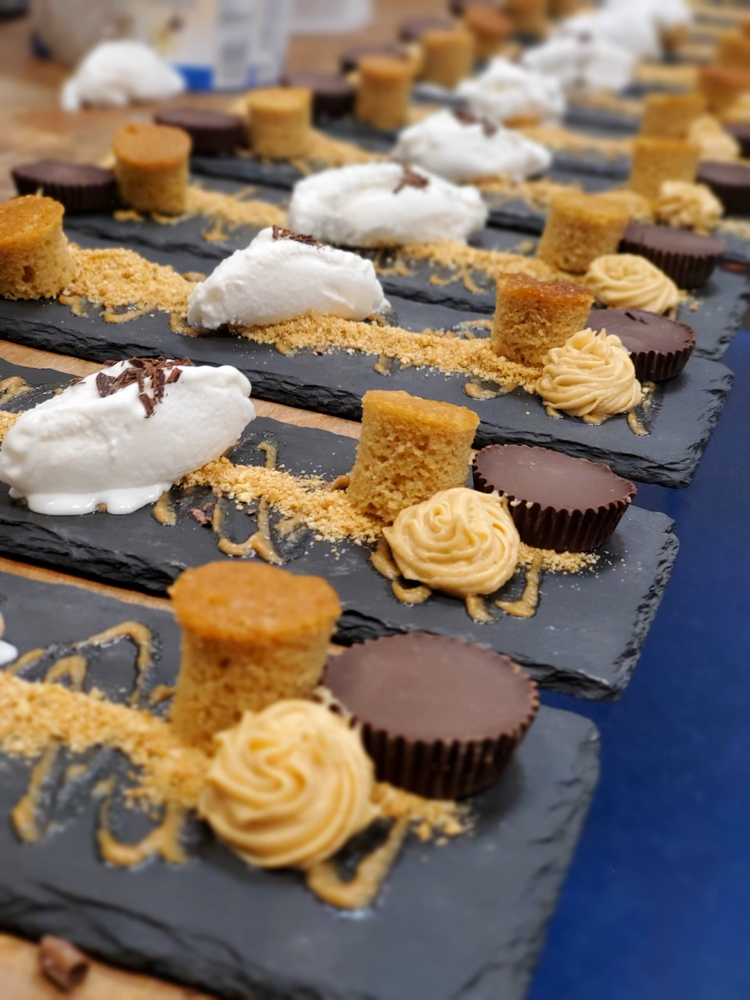
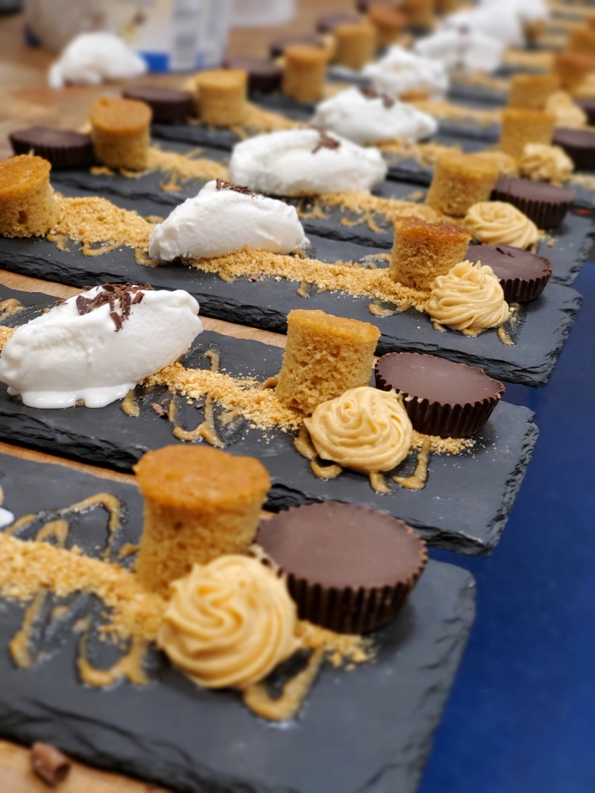

Chef Kohn's private chef services offer you the chance to experience fine dining at its best. From intimate dinners to large functions, our chefs will customize the menu to your taste and create unforgettable meals using only the freshest Kosher ingredients.


 

Chef Kohn offers a range of exceptional services tailored to creating an unforgettable culinary experience for any occasion. With an eye for detail and a passion for exquisite flavors, our chefs bring a touch of elegance to your dinner parties and large corporate functions alike. Whether you're hosting a multi-course Sheva Brochos celebration or planning an intimate date-night dinner, our team will curate a custom menu that perfectly suits your tastes and preferences. Contact Chef Kohn today to embark on a culinary journey that will delight you and your guests.
Get in touch with us using the form below and we'll get back to you as soon as possible.
Chef Kohn is a premier private chef service based in New York, Our team of experienced chefs brings a unique and personalized culinary experience to your home or event.
We specialize in creating custom menus tailored to your specific tastes and preferences. Whether it's an intimate dinner or a large-scale event, Chef Kohn provides exceptional service and outstanding cuisine.